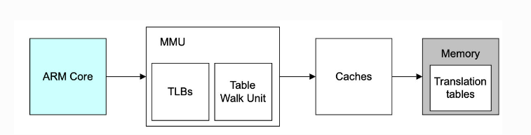
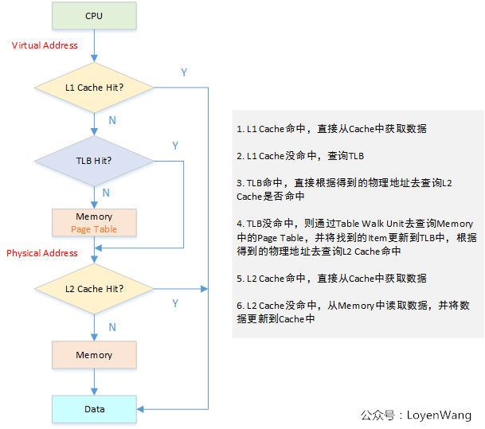
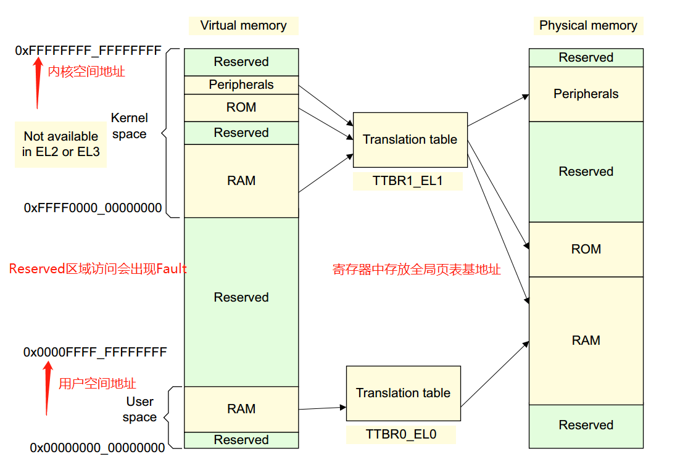
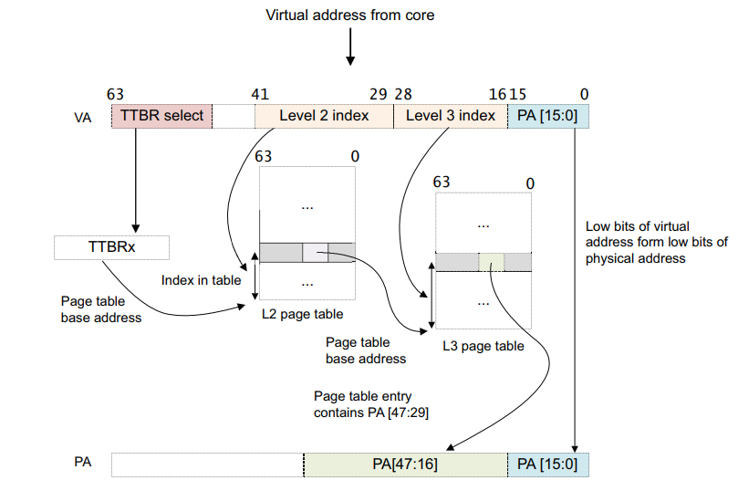

3.2.4.2. arm64 MMU

内存访问中cache与TLB参与过程

3.2.4.2.1. 虚拟地址到物理地址的转换
虚拟地址到物理地址的映射通过查表的机制来实现，在armv8中，kernel space的页表基地址存放在 TTBR1_EL1 寄存器中，user space页表基地址存放在 TTBR0_EL0 寄存器中，
其中内核地址空间的高位全为1，用户地址空间的高位全为0
0xFFFF0000_00000000 ~ 0xFFFFFFFF_FFFFFFFF
0x00000000_00000000 ~ 0x0000FFFF_FFFFFFFF

ARMv8中:
虚拟地址支持：64位虚拟地址中，并不是所有位都用上，除了高16位用于区分内核空间和用户空间外，有效位的配置可以是
36, 39, 42, 47。这决定了linux内核中地址空间的大小。比如内核中有效位 配置为CONFIG_ARM64_VA_BITS=39.用户空间地址范围0x00000000_00000000 ~ 0x0000007F_FFFFFFFF,大小为512G, 内核地址空间范围为0xFFFFFF80_00000000 ~ 0xFFFFFFFF_FFFFFFFF,大小为512G支持3种页面大小:
4K, 16k, 64k支持多级页表:
level0 ~ level3
结合有效虚拟地址位，页面大小，页表的级数，可以组合成不同的页表映射方式。

上图为页面大小为64k，42位的虚拟地址到物理地址的转换过程
如果VA[63:42] = 1, 则使用TTBR1用于第一页表的及地址, 如果VA[63:42] = 0, 则使用TTBR0用于第一页表的及地址
页表包含8192(2^(41-29+1))个64位页面表条目，并通过VA[41:29]进行检索。MMU检查页表条目的有效性以及是允许请求的内存访问。假设有效，则允许内存访问
二级页表条目是指向三级页表的地址(它是一个表描述符), VA[28:16]用于索引3级页表条目
将三级页表条目中的地址+VA[15:0]然后便得到VA对应的PA了